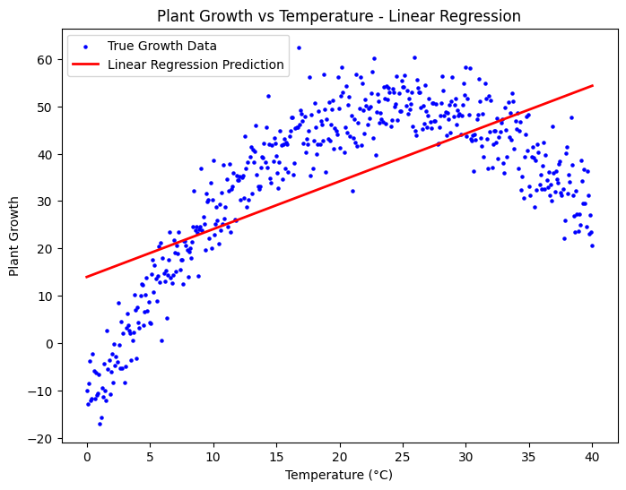

Midterm - Hands-on Exercise 1 (Linear Regression - Plant Growth)
Description: A machine learning exercise utilizing Python and Scikit-Learn to model the relationship between temperature and plant growth using a Simple Linear Regression model.
Objectives/Purpose:
- To generate synthetic data simulating plant growth across different temperatures.
- To reshape and preprocess data for model ingestion.
- To fit a linear regression model and generate growth predictions.
- To quantitatively evaluate the model's performance using standard error and variance metrics.
Key Features
- Synthetic Dataset Generation: Created a controlled dataset incorporating a non-linear underlying relationship (quadratic) with added Gaussian noise to simulate real-world data variability.
- End-to-End ML Pipeline: Demonstrated the complete workflow from data creation and reshaping to model fitting, prediction, and evaluation.
- Comprehensive Evaluation: Utilized multiple metrics (MAE, MSE, RMSE, R-squared) to assess the accuracy and suitability of the model.
- Data Visualization: Leveraged Matplotlib to plot the true data distribution against the linear regression line, visually highlighting the model's behavior.
Important Code Blocks
1. Synthetic Data Generation
This snippet generates the target variable (growth) based on a quadratic formula (peaking at 25°C) and adds random Gaussian noise to make the dataset realistic for regression testing.
# Simulate plant growth based in temperature (growth increases to a peak, then declines)
growth = -0.1 * (temperatures - 25) ** 2 + 50 + np.random.normal(0, 5, size=temperatures.shape)2. Model Fitting & Prediction
Here, the Scikit-Learn Linear Regression model is instantiated, trained on the reshaped 2D temperature array, and used to predict continuous growth values.
# Fit a linear regression model and predict growth
model = LinearRegression()
model.fit(temperatures, growth)
growth_pred = model.predict(temperatures)3. Model Evaluation
Standard metrics are calculated to evaluate the variance and error between the actual synthetic growth data and the model's linear predictions.
# Evaluate the model
mae = mean_absolute_error(growth, growth_pred)
mse = mean_squared_error(growth, growth_pred)
rmse = np.sqrt(mse)
r2 = r2_score(growth, growth_pred)Screenshots & Results

Evaluation Metrics Output:
- Mean Absolute Error (MAE): 11.08
- Mean Squared Error (MSE): 175.74
- Root Mean Squared Error (RMSE): 13.26
- R-squared (R²) Score: 0.437
Tools & Technologies
- Languages: Python 3
- Libraries/Frameworks: NumPy (array manipulation), Matplotlib (data visualization), Scikit-Learn (predictive modeling and metrics)
- Platforms: Google Colab / Jupyter Notebook
Challenges & Solutions
Problems Encountered: The primary analytical challenge observed was underfitting. Because the underlying synthetic data was generated using a quadratic formula (growth increasing up to 25°C and then declining), a simple linear regression model was mathematically unable to capture the curve, resulting in a low R-squared score (~43.7%) and visible deviation in the scatter plot.
How I Solved Them: While the strict goal of this exercise was to successfully implement Linear Regression, observing this limitation was a critical learning moment. Recognizing the underfitting visually and quantitatively highlights the necessity of Exploratory Data Analysis (EDA) and points toward the future implementation of Polynomial Regression or tree-based algorithms for non-linear phenomena.
Learning Reflection
What I Learned: I reinforced my understanding of the Scikit-Learn API workflow (instantiate, fit, predict) and the mathematical intuition behind standard evaluation metrics like MSE and R-squared. More importantly, I learned how to visually diagnose model bias and underfitting when applying a linear algorithm to non-linear data distributions.
Skills Gained: Python data generation with NumPy, constructing ML pipelines using Scikit-Learn, generating 2D plots with Matplotlib, and critically evaluating regression model limitations.